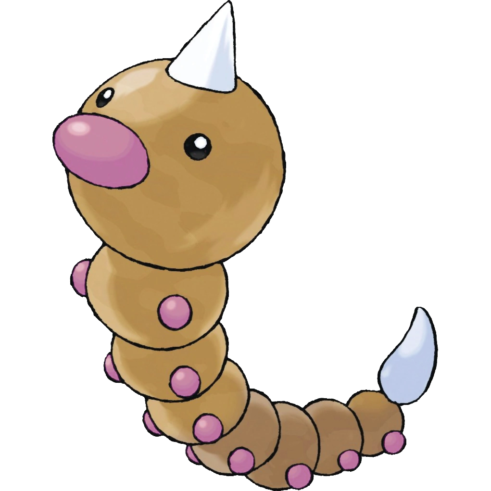

KANTO POKÉDEX
← 포켓몬 목록으로
#013

뿔충이
벌레
독
벌레 포켓몬
특성
인분
도주 (숨겨진 특성)
울음소리
포획률 & 성비
포획률
255 / 255
성비
♂ 50%
50% ♀
생태
굉장히 예민한 후각을 지니고 있다. 좋아하는 잎사귀인지 싫어하는 잎사귀인지 크고 빨간 코로 냄새 맡아 구별한다. 딱충이로 진화한다.
← #012 버터플
#014 딱충이 →